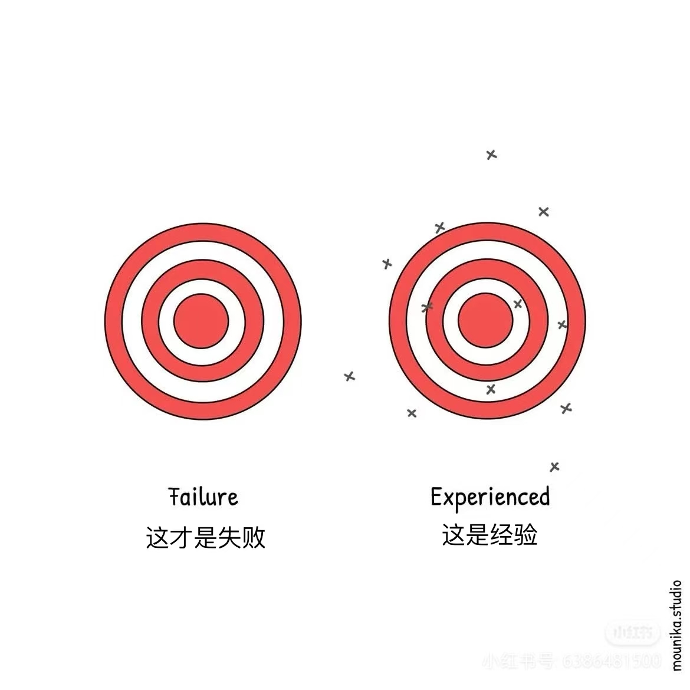
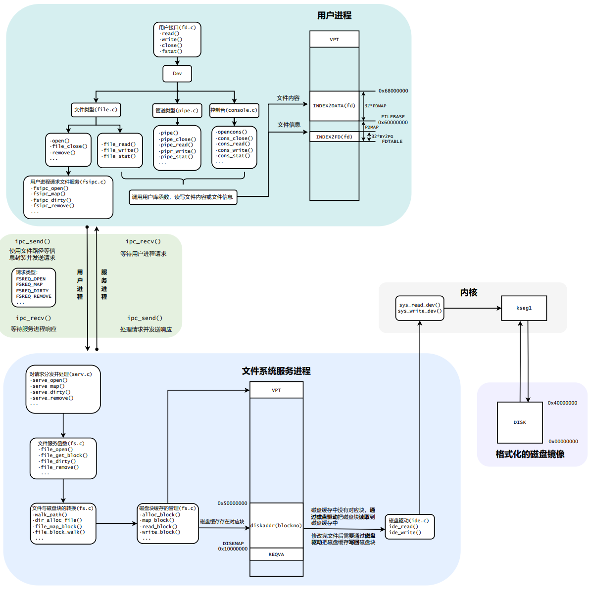

BUAA-OSLab5学习笔记
失败实为经验，放弃才是失败。
一 前言
首战冯如杯，混了个三等奖😭，有些许不悲不喜的麻木。理想和现实总是千差万别，尤其是在科研的道路上。这几天笔者还在坚持做一些 CV 研究，但是有一种“山外青山”的感觉，当克服了重重困难后，发现后面还有更加严峻的问题😡。
无妨无妨！人生难得圆满，笔者知足常乐。祝大家都能完成一些自己想做的事，无论大小、无论是否有人知晓、无论信手拈来或是苦心孤诣，我们只管踏踏实实迈步。有的时候是这样的，我们会屡战屡败、我们会消沉良久，但是只要我们永不言弃，我们就会在自己的方向上不断超越自己。人生是旷野，不用和他人比较，你只管超越自我！不必懦弱自卑、亦不用畏惧失败，【失败实为经验，放弃才是失败】。

这个Lab的学习，我们将以与大模型的人机交互为展示思路，分享笔者在利用大模型逐步学习文件系统的细节。大模型为笔者构建学习框架，并提供启发性问题，笔者根据阅读与问题回答大模型的问题。
（部分内容与标题复制自大模型，请注意甄别）
二 正文
1 理解文件系统和磁盘驱动的基础 (对应 5.1, 5.2, 5.3.1)
目标：
- 明白文件系统是做什么的。
- 理解 MOS 文件系统的整体架构 (微内核)。
- 掌握内存映射 I/O (MMIO) 的概念及其在 MOS 中的应用。
问题汇总：
问题1：用你自己的话总结一下，为什么操作系统需要文件系统？它解决了什么问题？
文件系统的核心作用：
- 持久化存储：解决了内存易失性的问题，使得数据可以在断电后依然存在。
- 大容量存储：外部存储设备（如硬盘、SSD）通常比内存容量大得多，可以存储海量数据。
- 方便管理和组织：通过目录、文件名等方式，使得用户和程序可以方便地组织、查找和访问数据，而不是直接面对底层的物理存储块。
- 数据共享与保护：文件系统也为多用户、多进程之间的数据共享和访问控制提供了基础。
问题2：观察图 5.1，如果一个用户程序想读取磁盘上的一个文件，数据流和控制流大概是怎样的？（简单描述一下，不需要非常精确）

( p.s.该部分内容充分融合大模型的回复，作为笔者的学习初期框架 )
- 用户程序发起请求:
- 用户程序（比如你写的 test.c）调用一个库函数，比如 read() (这个函数可能在 user/lib/fd.c 或 user/lib/file.c 中)。
- 这个库函数会准备一个包含请求信息（比如要读取哪个文件、从哪里开始读、读多少）的消息。
- 通过 IPC 与文件服务进程通信:
- 用户库函数 (比如 fsipc_read 在 user/lib/fsipc.c) 会使用进程间通信 (IPC) 机制，将这个请求消息发送给文件系统服务进程 (fs_serv)。
- 此时，用户程序可能会阻塞，等待 fs_serv 的响应。
- 文件服务进程 (fs_serv) 处理请求:
- fs_serv 进程在其主循环中通过 IPC 接收到这个请求。
- fs_serv 解析请求，确定要读取的文件和数据范围。
- 关键点：磁盘块缓存 (Disk Cache) (这一部分在图 5.1
中用 "磁盘缓存中没有对应块..." 和 "磁盘缓存存在对应块" 隐晦地表示了)
- fs_serv 首先检查它自己管理的磁盘块缓存中是否有所需文件的数据块。
- 缓存命中 (Cache Hit)：如果数据块在缓存中，fs_serv 可以直接从缓存中获取数据。
- 缓存未命中 (Cache
Miss)：如果数据块不在缓存中，fs_serv 就需要从磁盘读取：
- fs_serv 会调用其内部的磁盘驱动函数 (比如 ide_read 在 fs/ide.c 中)。
- 这个磁盘驱动函数会通过系统调用 (比如 syscall_read_dev) 请求内核 (Kernel) 去操作磁盘硬件。
- 内核执行磁盘读取操作，将数据从磁盘扇区读到 fs_serv 指定的内存缓冲区（这个缓冲区就是块缓存的一部分）。
- 数据读入块缓存后，fs_serv 就可以从缓存中获取数据了。
- 文件服务进程 (fs_serv) 返回数据:
- fs_serv 将读取到的数据（无论是从缓存直接获取还是从磁盘加载到缓存后再获取）通过 IPC 发送回给发起请求的用户程序。
- 用户程序接收数据:
- 用户程序的库函数通过 IPC 接收到 fs_serv 返回的数据。
- read() 函数将数据拷贝到用户指定的缓冲区，并返回实际读取的字节数。
- 用户程序解除阻塞，继续执行。
问题3：MOS 将文件系统服务放在用户态（fs_serv 进程），这种设计和传统的宏内核（文件系统是内核一部分）相比，你觉得各有什么好处和坏处？
微内核设计（MOS的方式）的优点：
- 更高的系统稳定性 (Robustness & Fault
Isolation)：
- 文件系统服务（fs_serv）作为独立的用户进程运行。如果 fs_serv 崩溃，通常不会导致整个操作系统内核崩溃，提高了系统的整体健壮性。内核可以保持运行，其他不受文件系统影响的服务也能继续。
- 更好的模块化和灵活性 (Modularity &
Flexibility)：
- 易于开发、测试和调试：用户态程序的开发和调试工具链更成熟，比直接在内核中开发模块更方便。
- 易于扩展和替换：可以更容易地更新、替换甚至并行运行不同版本或类型的文件系统服务，而无需修改或重新编译内核。
- 清晰的接口：文件系统服务通过明确的IPC接口与用户程序和内核交互，使得系统结构更清晰。
微内核设计的缺点：
- 性能开销 (Performance Overhead)：
- 最主要的缺点。用户程序与文件系统服务之间的通信需要通过IPC，这涉及到多次用户态和内核态之间的上下文切换以及数据拷贝。
- 相比于宏内核中直接的内核函数调用，这些额外的开销（尤其对于频繁、小型的文件操作）可能导致性能下降。
- 通信复杂性 (Communication Complexity)：
- 需要精心设计和实现高效且可靠的IPC机制。
- 服务间的接口定义和协议管理可能比内核内部模块间的直接调用更复杂。
- 功能实现的间接性 (Indirectness of Feature
Implementation)：
- 某些原本在内核中可以直接访问硬件或内核数据结构的功能，现在可能需要通过额外的IPC请求或者更复杂的机制来实现，增加了实现的间接性。
问题4：什么是 I/O 端口？什么是内存映射 I/O？MOS 采用的是哪一种？
I/O端口其实就是外设寄存器，在数据通信时寄存控制信号、状态信号与数据的寄存器。
内存映射I/O则是因为我们的I/O设备拥有的物理地址是固定的，我们通过简单读写固定的内核虚拟地址，即kseg1，就能实现外部设备驱动的功能。
MOS采用的是内存映射I/O。
问题5：kseg0 和 kseg1 在访问内存和外设时有什么关键区别？为什么访问外设通常使用 kseg1？
- kseg0 (Cached)：用于访问主内存 (RAM)。缓存能显著提升对内存中代码和数据的访问性能。
- kseg1
(Uncached)：用于访问I/O设备寄存器。不使用缓存能确保：
- 写操作立即到达设备。
- 读操作获取设备最新的实时状态。
- 避免因缓存导致的读写副作用问题。
问题6 (对应 Thinking 5.1)：
如果通过 kseg0 读写设备，那么对于设备的写入会缓存到 Cache 中。这是 一种错误的行为，在实际编写代码的时候这么做会引发不可预知的问题。请问题：这么做 这会引发什么问题？对于不同种类的设备（如我们提到的串口设备和 IDE 磁盘）的操作会 有差异吗？可以从缓存的性质和缓存更新的策略来考虑。
如果用 kseg0 访问一个串口的数据发送寄存器，你写入一个字符后，这个字符是立刻被发送出去，还是可能会有延迟？为什么？
字符的发送会有延迟。这个延迟可能很小，也可能比较明显，取决于缓存的策略和当前系统负载。在最坏的情况下，如果系统在缓存写回THR之前发生意外（比如重启），这个字符可能永远不会被发送。
如果用 kseg0 访问一个 IDE 磁盘的状态寄存器来检查它是否忙碌，你读到的状态是实时的，还是可能是过时的？为什么？
可能是过时的，因为kseg0有缓存机制，如果MMU的cache命中了，那MMU就不会更新实时数据。
volatile 关键字在这里起什么作用？如果不用 volatile 修饰指向设备寄存器的指针，可能会发生什么问题？
确保对映射到设备寄存器的内存地址的每一次读操作都真正从硬件读取，每一次写操作都真正写入硬件，并且这些操作不会被编译器优化掉或不当重排，从而保证与硬件交互的正确性。
2 学习 5.3.2 IDE 磁盘 & 5.3.3 驱动程序编写
目标：
- 理解IDE磁盘的物理结构和LBA寻址模式。
- 熟悉与IDE磁盘交互涉及的关键寄存器及其功能。
- 掌握IDE磁盘读写的基本命令和时序。

问题汇总：
问题1：为什么说扇区是磁盘进行数据传输的基本单位？它的大小通常是多少？
因为通过读写 PIIX4 的特定寄存器，我们可以实现以扇区为最小单元的读写，大小通常是512字节。
问题2：LBA 寻址相对于 CHS 寻址有什么优点？为什么现代操作系统和驱动程序更倾向于使用 LBA？
根据指导书所说，CHS寻址虽然符合物理意义，但是依赖于三个参数，即柱面-磁头-扇区。相比之下LBA根据每个扇区唯一的编号进行寻址，类似于索引寻址的意味？直接且方便。
LBA通过提供一个简单的、线性的扇区编号视图，成功地将操作系统从复杂的、易变的磁盘物理几何参数中解耦出来，使得磁盘管理更简单、更高效，并且能够支持大容量磁盘。（p.s. 本段为AI总结内容）
问题3：数据寄存器在读操作和写操作中分别扮演什么角色？它一次可以传输多少位数据（根据图示可能是16位或32位，具体看硬件）？
数据寄存器是IDE控制器中用于暂存正在传输的扇区数据的硬件部分。
在读磁盘时，它是数据的来源（对CPU而言）。
在写磁盘时，它是数据的目的地（对CPU而言）。
它的大小（如32位）决定了CPU一次I/O操作可以处理的数据块大小，但这通常小于一个完整扇区的大小，所以需要循环操作
问题4：扇区数量寄存器用来指定什么？它的值通常是如何确定的？
- 用来指定一次读写的扇区数量。
- 在读取/写入扇区函数，即read/write_sector中
*((volatile u_char*)(MALTA_IDE_NSECT + 0xA0000000)) = 1;设定为单次读写1个扇区。
问题5：这三个寄存器（LBAL, LBAM, LBAH）是如何组合起来表示一个28位的LBA扇区号的？每个寄存器负责LBA地址的哪一部分？
- 他们分别负责[23:16],[15:8],[7:0]。再从偏移量为0x6的寄存器中借来低四位作为[27:24]，构成28位扇区编号。
问题6：Device / Head Register (驱动器/磁头寄存器)寄存器除了选择主盘/从盘 (DEV位) 和设置LBA模式 (LBA位) 外，还用来存放LBA地址的哪一部分？
- 选择寻址模式 (LBA vs CHS)。
- 选择目标驱动器 (主盘 vs 从盘)。
- 在LBA模式下，提供LBA地址的最高4位。
- 在CHS模式下，提供磁头号。
问题8：为什么状态寄存器和命令寄存器可以使用相同的I/O端口地址？它们是如何区分读操作（获取状态）和写操作（发送命令）的？
因为状态寄存器只在读的时候使用？而命令寄存器只在写的时候使用。
相关源码如下：
1
2
3
4
5
6
7
8
9
10
11
12
13void read_sector(int diskno, int secno, void* dst)
{
/* code */
*((volatile u_char*)(MALTA_IDE_STATUS + 0xA0000000)) = MALTA_IDE_CMD_PIO_READ;
/* code */
}
void write_sector(int diskno, int secno, void* dst)
{
/* code */
*((volatile u_char*)(MALTA_IDE_STATUS + 0xA0000000)) = MALTA_IDE_CMD_PIO_WRITE;
/* code */
}至于这两个宏的具体数值，在
include/malta.h当中有定义：1
2如此便可区分读写啦。
问题9：状态寄存器中的 BSY (Busy) 位、DRDY (Drive Ready) 位、DRQ (Data Request) 位、ERR (Error) 位分别代表什么含义？它们在磁盘操作的哪个阶段是重要的？
BSY：是否忙碌 DRDY：是否就绪 DRQ：是否有数据请求 ERR：错误信息
总结一下它们在典型操作流程中的角色：
- 操作前：等待 BSY = 0 (且通常期望 DRDY = 1)。
- 发送命令。
- 操作中/数据传输前：等待 BSY = 0。然后检查：
- ERR 位：如果为 1，则处理错误，读取错误寄存器。
- DRQ 位：如果为 1（且 ERR = 0），则可以进行数据传输（从数据寄存器读，或向数据寄存器写）。
- 数据传输。
3 理解磁盘上文件系统的布局与核心数据结构 (对应 5.4.1, 5.4.2)
目标：
- 掌握MOS文件系统在磁盘上的整体布局（超级块、位图、数据块）。
- 理解超级块 (struct Super) 的作用和包含的信息。
- 理解位图 (Bitmap) 如何管理空闲数据块。
- 深入理解文件控制块 (struct File) 的结构及其在表示文件和目录中的作用（直接指针、间接指针）。
- 能够计算文件系统的一些关键限制（如单个文件最大大小、目录中最多文件数）。
问题汇总：
- 问题1：在MOS文件系统中，一个磁盘块 (Block) 的大小是多少字节？它和磁盘扇区 (Sector) 是什么关系？为什么文件系统要以“块”而不是“扇区”作为分配和管理的基本单位？
一个磁盘块有4096字节；它由2的幂次个磁盘扇区组成；文件系统以块作为基本单位是为了对相邻的磁盘扇区进行结合，减少寻址的次数与难度。
问题2：
- 磁盘的第0块 (Block 0) 通常用来做什么？
- 超级块 (Super Block) 位于磁盘的哪个块？它的主要作用是什么？
- 位图块 (Bitmap Blocks) 紧跟在超级块之后，它们是用来做什么的？位图中的一个bit代表什么？
1.当作引导扇区与分区表
2.
Super Block位于磁盘的第1块，宏观描述文件系统的基本信息3.我觉得他们是对应到每个磁盘块的索引？类似于字典，但是其中存的数据是1bit的是否被占用的信号。
问题3：关于
Super Block，定义如下：1
2
3
4
5struct Super {
u_int s_magic; // Magic number: FS_MAGIC 魔数标识符
u_int s_nblocks; // Total number of blocks on disk 本文件系统有s_nblocks=1024个磁盘块
struct File s_root; // Root directory node 根目录
};问题4：如果一个磁盘有 N 个数据块（不包括超级块和引导块），并且每个位图块可以管理 M 个数据块的状态，那么大约需要多少个位图块？（提示：一个位图块大小是 BLOCK_SIZE 字节，每个字节8个bit）。
num = (N+M-1)/N
- 问题5 (对应 Exercise 5.4 的前置思考)：如果要将磁盘上的第 blockno 个数据块标记为空闲（假设空闲用bit 1表示），你需要在位图的哪个字节的哪个位进行操作？如何用位运算来实现这个标记？如果 blockno 为0，是否应该允许将其标记为空闲？为什么？
执行位操作：
1
bitmap[byte_index] |= (1 << bit_offset); // (假设空闲为1)
block 0标记为空闲：
Block 0 在传统PC体系中通常是主引导记录 (MBR) 和分区表。即使在MOS中它不被直接使用，它仍然是一个具有特殊含义的块。文件系统的数据块分配不应该涉及到这个块。
- 问题6：(Thinking 5.2)
查找代码中的相关定义，试回答一个磁盘块中最多能存储多少个文件控制块？一个目录下最多能有多少个文件？我们的文件系统支持的单个文件最大为多大？
一个文件控制块有256B，磁盘块共计4096B，所以最多能够储存
4096/256 = 16个文件控制块。根据MOS指导书所说应该共计1024个磁盘块，1个磁盘块可以存16个文件控制块，所以一个目录可以存
1024 * 16 = 16384。单个最大文件最大为
1024*4096=4MB
4 理解和实现块缓存机制(对应 5.4.3)
目标：
- 理解引入块缓存的目的和好处。
- 掌握MOS中块缓存的实现方式（内存映射）。
- 能够实现块地址到缓存虚拟地址的转换。
- 能够实现将磁盘块映射到内存缓存（map_block）和解除映射（unmap_block，并处理脏块写回）的逻辑。
问题汇总：
问题1：MOS中的块缓存是如何实现的 (参考图 5.7)？
DISKMAP(例如 0x10000000) 和DISKMAX(例如 0x40000000) 在文件服务进程 (fs_serv) 的用户虚拟地址空间中定义了一个连续的、巨大的虚拟内存区域，专门用于作为磁盘块的缓存。这个区域的大小是DISKMAX。- 磁盘上的第 n 个块被逻辑上映射到这个虚拟地址空间的 DISKMAP + n * BLOCK_SIZE。这意味着，如果第 n 个块被加载到缓存中，那么 fs_serv 就可以通过访问虚拟地址 DISKMAP + n * BLOCK_SIZE 来直接读写这个块的内容（就像访问普通内存一样）。实际的物理页面是在需要时才分配并与这些虚拟地址关联的。
问题2：Thinking 5.3
请思考，在满足磁盘块缓存的设计的前提下，我们实验使用的内核支持的最 大磁盘大小是多少？
如上所述，这个区域的大小是DISKMAX也就是0x40000000字节，换算可得为1GB
问题3： Thinking 5.4
在本实验中，fs/serv.h、user/include/fs.h 等文件中出现了许多宏定义， 试列举你认为较为重要的宏定义，同时进行解释，并描述其主要应用之处。
1. 块缓存与磁盘映射相关的宏：
- BLOCK_SIZE (或 BLKSIZE):
4096B- 含义：定义了文件系统中一个“块”的大小，单位是字节。
- 作用：文件系统进行磁盘空间分配、数据读写的最小逻辑单位。所有文件大小、偏移量等都与块大小相关。块缓存也是以块为单位进行管理的。
- DISKMAP:
0x10000000- 含义：文件服务进程 (fs_serv) 用户虚拟地址空间中，用于映射磁盘块的起始虚拟地址。
- 作用：提供了一个统一的虚拟地址窗口，通过这个窗口可以访问到被缓存到内存中的磁盘块。磁盘块
n 的内容如果被缓存，可以通过
DISKMAP + n * BLOCK_SIZE这个虚拟地址访问。
- DISKMAX:
0x40000000- 含义：文件服务进程 (fs_serv) 用户虚拟地址空间中，用于映射磁盘块的结束虚拟地址 (不包含此地址)。
- 作用：
DISKMAX就是块缓存区能容纳的最大虚拟数据量，这也间接限制了文件系统能支持的磁盘大小）。
2. 文件和目录属性相关的宏：
- MAXNAMELEN:
128- 含义：定义了一个文件名（或目录名）所允许的最大长度（通常不包括末尾的 \0 空终止符）。
- 作用：限制了 struct File 中 f_name 字符数组的大小。
5 理解文件描述符、用户接口及文件系统服务 (对应 5.5)
目标：
- 理解文件描述符 (struct Fd, struct Filefd) 在进程中如何表示打开的文件。
- 掌握用户程序通过库函数（如 open, read）和IPC与文件系统服务 (fs_serv) 交互的流程。
- 实现 open, read, remove 等用户接口函数及其对应的文件系统服务处理逻辑。
- 理解 fork 对文件描述符的影响。
问题汇总：
问题一：关于struct Dev，它的定义在哪里？怎样去理解这个设计？
在./user/include/fd.h当中，具体代码实现如下：
1 | // Device struct: |
这正是一种设计的核心思想，也称为“函数指针表”、“虚函数表”（在C++中）或“行为委托”。
这种设计使得 write() (以及 read(), close() 等) 函数可以保持通用，而将设备相关的特殊逻辑封装在各个设备的具体实现函数中。这是操作系统I/O子系统中非常常见和重要的分层与抽象机制。
那作为一个“接口”，它又如何知道我们的设备类型呢？如你所见：
1 | struct Fd { |
问题二：为什么需要文件描述符来维护偏移量指针？
有以下三个主要原因：
- **处理大文件的分段顺序I/O ：使得可以方便地、一部分一部分地处理大文件。
- 维护每个打开文件实例的独立上下文：允许不同打开实例（即使是同一个文件）有各自独立的当前读写位置（除了 fork 的特殊情况）。
- 提供简洁和通用的流式I/O API：让应用程序可以用统一的方式处理各种类型的文件和设备。
问题三：(Thinking 5.5)
在 Lab4“系统调用与 fork”的实验中我们实现了极为重要的 fork 函数。那 么 fork 前后的父子进程是否会共享文件描述符和定位指针呢？请在完成上述练习的基础上编写一个程序进行验证。
编写测试程序如下：
1 |
|
对应的输出如下：
1 | Phase 1: Creating and writing to /testfdfork.txt |
由此可见：fork 前后的父子进程共享文件描述符和定位指针。
问题4：(Thinking 5.6)
请解释 File, Fd, Filefd 结构体及其各个域的作用。比如各个结构体会在哪 些过程中被使用，是否对应磁盘上的物理实体还是单纯的内存数据等。说明形式自定，要 求简洁明了，可大致勾勒出文件系统数据结构与物理实体的对应关系与设计框架。
先把定义放在这里：
1 | struct File { |
大体设计框架包括以下三个部分：
- 磁盘上 (物理实体)：
- 超级块 (Block 1): 包含 struct Super。
- struct Super 内嵌了 根目录的 struct File (s_root)。
- 目录的数据块: 包含一个或多个 struct File 结构数组，描述该目录下的子项。
- 普通文件的数据块: 包含文件的实际字节内容。
- 间接块: 包含指向其他数据块的块号数组。
- 位图块: 包含表示各数据块空闲/已用状态的位图。
- 超级块 (Block 1): 包含 struct Super。
- 文件系统服务进程 fs_serv (内存中，服务器端状态)：
- 块缓存: 内存中缓存了部分磁盘块的内容（包括超级块、位图块、目录数据块、文件数据块、间接块）。
- struct Open 数组/列表 (opentab):
每个条目代表一个被打开的文件实例。
- o_file (类型 struct File *): 指向块缓存中该文件的 struct File 元数据。
- o_fileid: 此打开实例的唯一ID。
- o_mode: 打开模式。
- 用户进程 (内存中，客户端状态)：
- 文件描述符表 (Fd Table): 每个条目对应一个 struct Fd 或其派生类型（如 struct Filefd）的实例，存储在一个由 fd_alloc 分配的虚拟页上。
- struct Fd: 通用打开文件/设备状态。
- fd_offset: 当前读写偏移量。
- fd_omode: 打开模式。
- fd_dev_id: 设备类型。
- struct Filefd (用于普通文件):
- 内含 struct Fd f_fd。
- f_fileid: 从 fs_serv 获取的ID，用于后续IPC。
- f_file (类型 struct File): 磁盘上 struct File 的一个本地缓存副本，在 open 时从 fs_serv 获取。
问题5：(Thinking 5.7)
图 5.9 中有多种不同形式的箭头，请解释这些不同箭头的差别，并思考我们 的操作系统是如何实现对应类型的进程间通信的。
1、实线箭头，实心三角头 (->):同步消息 (Synchronous Message) 或 阻塞调用 (Blocking Call)。
2、虚线箭头，开放箭头头 (-->):返回消息 (Return Message) 或 回复 (Reply)。
MOS主要通过一套基于消息传递和页面共享的IPC机制来实现进程间通信，其核心系统调用是 ipc_send 和 ipc_recv。这种机制本质上是同步的、阻塞的。
三 后记
这一周算是期末周的开始吧，事情有点太多了😡，慢慢处理吧，希望自己能稳住情绪，多做事情少打游戏😊，最重要的也许是放平心态，保证精力吧！大家一起加油，我们下期再见👋
If you like this blog or find it useful for you, you are welcome to comment on it. You are also welcome to share this blog, so that more people can participate in it. If the images used in the blog infringe your copyright, please contact the author to delete them. Thank you !